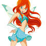
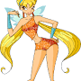

Bloom
A fada da Chama do Dragão. Ela vem da Terra, mas
descobre ser a princesa de Domino.
Corajosa, determinada
e leal, é a líder do grupo.

Stella
A fada do Sol e da Lua (mais tarde, fada da Luz). É a princesa de Solaria.
Vaidosa e divertida, adora moda e tem um grande coração.
Flora
A fada da Natureza. Vem de Linphea. É doce, gentil e ama plantas.
Sempre busca soluções pacíficas para os problemas.